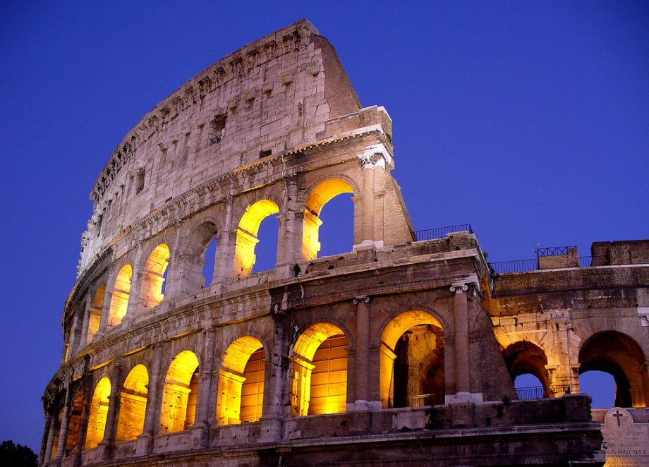

1. El Coliseo, Roma
El Coliseo tiene un lugar de respeto entre los monumentos famosos del mundo y es el más visitado de Italia. Fue construido en el primer siglo antes de Cristo y todavía sigue siendo uno de los más grandes símbolos del poder del Imperio Romano. Su interior, enorme e imponente, realmente revive lo que una vez fueron las glorias del imperio más importante de la historia.
2. La Fontana de Trevi, Roma

La Fontana di Trevi, diseñada en 1732 por Nicola Salvi, es una de las fuentes más bonitas del mundo. El espectacular y sorprendente diseño de Salvi aún conserva su encanto inalterado y ha sido escenario de numerosas películas, desde “La Dolce Vita” y “Vacaciones en Roma” de Fellini con Audrey Hepburn y Gregory Peck hasta el clásico italiano “Totòtruffa 62”, donde el comediante napolitano se las arregló para vender este monumento a un turista estadounidense rico e ingenuo
3. La Torre Inclinada, Pisa

La Torre di Pisa es un verdadero símbolo e icono de Italia. Impresionante, curiosa y visitada por millones de turistas cada año, no hay una imagen más icónica que la de miles de personas que posan como si la estuvieran sosteniendo. Pero lo que probablemente no sabías es que toda la Piazza dei Miracoli que rodea la Torre Inclinada de Pisa es igual de espléndida.
4. El Duomo, Milán
El Duomo di Milano, la imponente catedral gótica de Milán, hecha de mármol blanco y rosa de las canteras de Candoglia, tiene capacidad para 40.000 personas. En el espléndido escenario de la plaza que lleva su nombre, se puede admirar la estatua dorada de la Madonnina, que se encuentra en el chapitel más alto de la catedral.